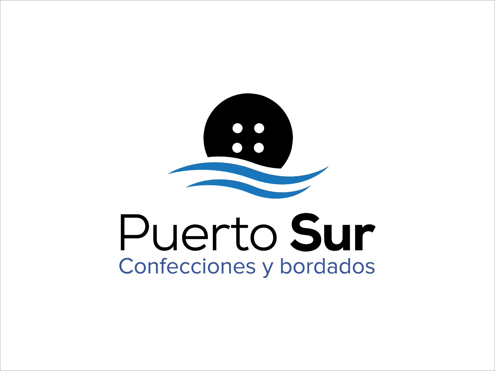

Puerto Sur

Comercial Puerto Sur es una empresa dedicada a entregar soluciones en el área de vestuario corporativo y/o uniformes de trabajo, nacemos para entregar eficiencia y eficacia en la fabricación de vestuario laboral.
Nuestro trabajo está centrado, en vestir a las empresas de las zona, prestando asesorías en telas y confección de uniformes de acuerdo al desempeño de cada trabajador, asegurando de esta manera la durabilidad de cada prenda.
Nuestros Pilares
Eficiencia
Entregamos soluciones rápidas y efectivas para tu vestuario de trabajo.
Calidad
Usamos materiales y técnicas de confección que aseguran la durabilidad.
Asesoría
Te guiamos en la elección de telas y diseños ideales para tu rubro.